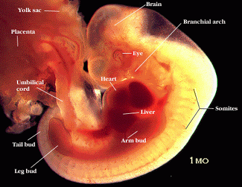
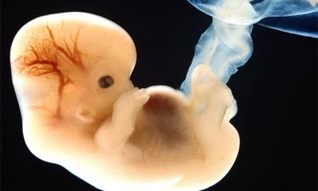
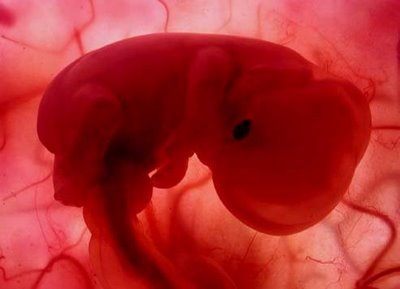

Minggu ke-5 :
Terbentuk 3 lapisan yaitu ectoderm, mesoderm dan endoderm.
Ectoderm adalah lapisan yang paling atas yang akan membentuk system
saraf pada janin tersebut yang seterusnya membentuk otak, tulang
belakang, kulit serta rambut. Lapisan Mesoderm berada pada lapisan
tengah yang akan membentuk organ jantung, buah pinggang, tulang dan
organ reproduktif. Lapisan Endoderm yaitu lapisan paling dalam yang
akan membentuk usus, hati, pankreas dan pundi kencing.

Minggu ke-6 :
Ukuran embrio rata-rata 2-4 mm yang diukur dari puncak kepala
hingga bokong. Tuba saraf sepanjang punggung bayi telah menutup. Meski
Anda belum bisa mendengar, jantung bayi mulai berdetak pada minggu ini.
Sistem pencernaan dan pernafasan mulai dibentuk, pucuk-pucuk kecil yang
akan berkembang menjadi lengan kaki pun mulai tampak


Minggu ke-7 :
Akhir minggu ketujuh, panjangnya sekitar 5-13 mm dan beratnya 0,8
gram, kira-kira sebesar biji kacang hijau. Pucuk lengan mulai membelah
menjadi bagian bahu dan tangan yang mungil. Jantung telah dibagi
menjadi bilik kanan dan bilik kiri, begitu pula dengan saluran udara
yang terdapat di dalam paru-paru

Minggu ke 8
Panjang kira-kira 14-20 mm. Banyak perubahan yang terjadi pada bayi
Anda. Jika Anda bisa melihat , ujung hidung dan kelopak mata mulai
berkembang, begitu pula telinga. Brochi, saluran yang menghubungkan
paru-paru dengan tenggorokan, mulai bercabang. Lengan semakin membesar
dan ia memiliki siku. Semua ini terjadi hanya dalam 6 minggu setelah
pembuahan.
bayi sudah mulai terbentuk diantaranya pembentukan lubang hidung,
bibir, mulut serta lidah. Matanya juga sudah kelihatan berada dibawah
membran kulit yang tipis. Anggota tangan serta kaki juga terbentuk
walaupun belum sempurna